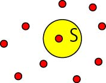
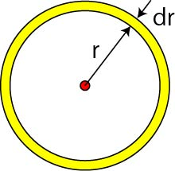

最近接長 (Nearest Neighbor Distance)-01
最近接長とは，
ランダムに分布された粒子同士において，一番近い粒子との距離の平均値
となります．
つまり，ぱらぱらとランダムに粒子をばらまいたときに，一番近い粒子との距離はどのくらい？というものです．
ランダムな現象なので，確率的振る舞いとなりますので，ポアソン分布，から考えていきましょう．
今回は，このサイト，を参考にさせていただきました．
このときの平均の密度を，ρ，とした場合，ある面積，S，に存在する粒子の数の平均値は，

\(\Large \lambda = S\cdot\rho\)
となります．ポアソン分布に従うとしたので，その値の分布は，以下の式で表すことができます．
\(\Large P(x) = \frac{(S\cdot\rho)^x}{x!}\cdot e^{-S\cdot\rho}\)
さて，最近接距離(Nearest Neighbor Distance)の定義は，
ランダムに分布された粒子同士において，一番近い粒子との距離の平均値
とあるので，以下の条件を満足させる必要がある．
１． ある点から半径ｒの円内には全く他の点が存在しない
２． 半径ｒとｒ＋ｄｒで区切られた微小な環状面積に少なくとも1つは粒子が存在する．
となります．

これらの条件について考えていきましょう．